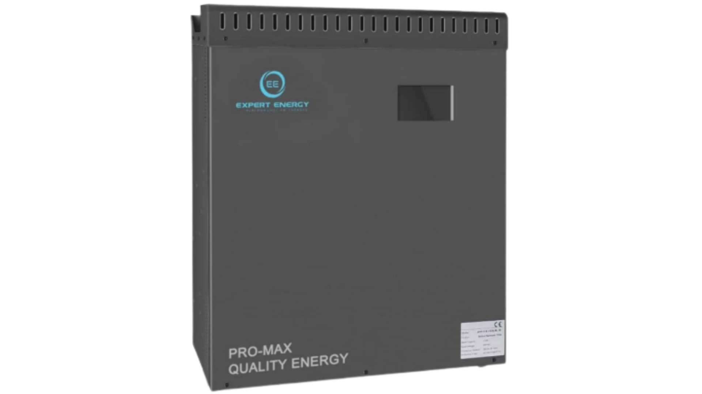
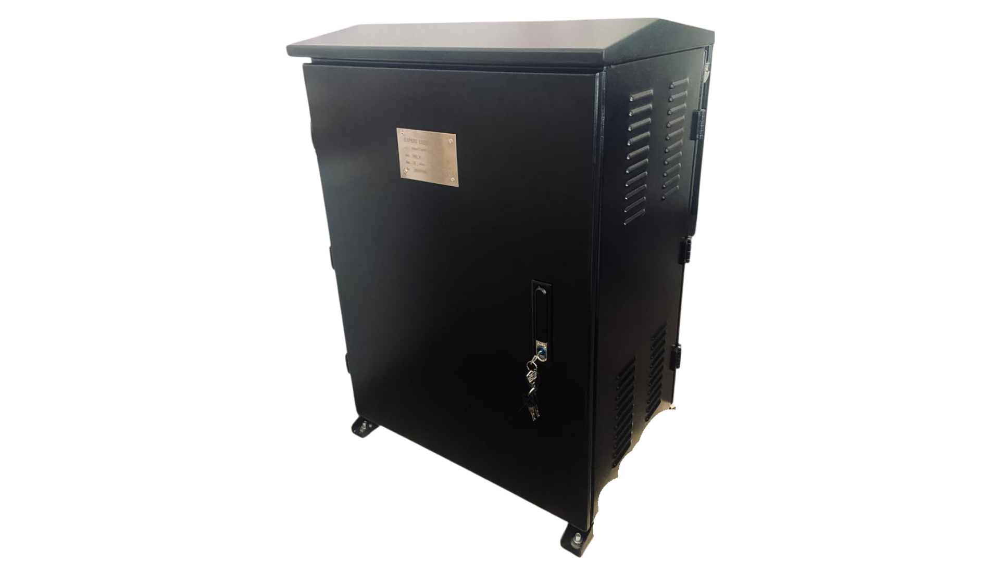
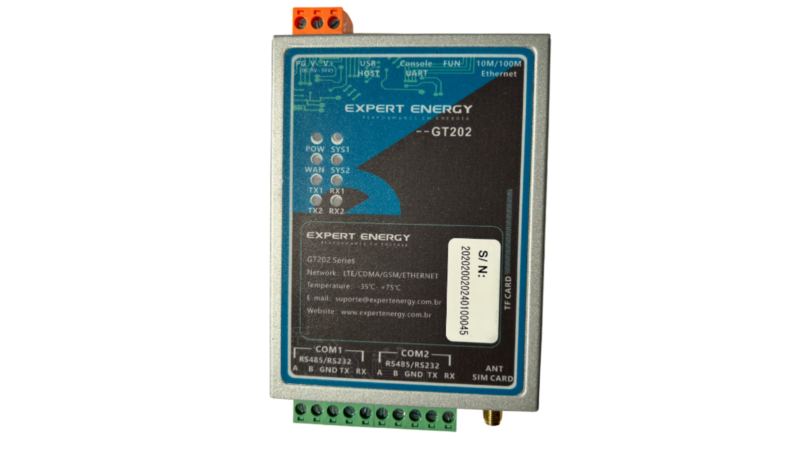
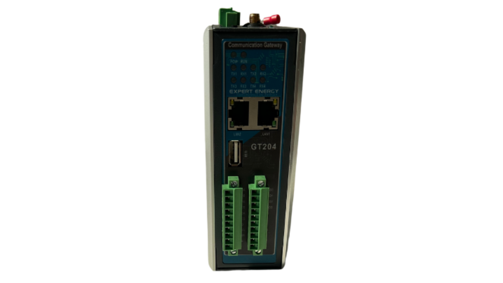
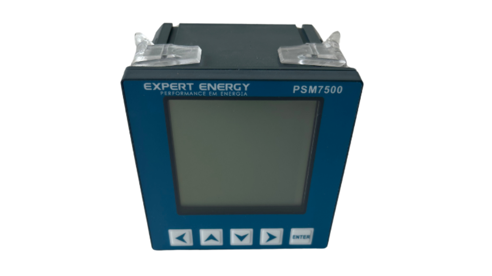

Equipamentos de Monitoramento
Soluções completas em hardware para gestão energética inteligente, com precisão e confiabilidade comprovadas.

Gerador Estático VAR
Sistema de controle digital, tecnologia de aplicação em três níveis, algoritmo avançado de detecção de potência reativa e estratégia de controle PWM para obter compensação dinâmica e precisa da potência reativa. Design modular, que facilita a conexão paralela com vários módulos plug-inn-play, ocupa pouco espaço e de fácil de operação.

Painel Controlador Fator de Potência VAR
O controlador de fator de potência é um novo tipo de equipamento de medição e controle de distribuição de energia que integra aquisição de dados, compensação de potência reativa, análise de parâmetros da rede e outras funções. É adequado para monitoramento e controle de compensação de potência reativa de sistemas de distribuição de energia de baixa tensão CA 0,4 kV, 50 Hz. Este produto é adequado para locais de geração de energia fotovoltaica e pode resolver eficazmente o problema de multas por potência reativa causadas pela geração de energia fotovoltaica, consumo de eletricidade comum, etc.

Controlador de Fator de Potência KFP3
O controlador de fator de potência KFP3 é um novo tipo de equipamento de medição e controle de distribuição de energia que integra aquisição de dados, compensação de potência reativa, análise de parâmetros da rede e outras funções. O controlador de fator de potência KFP3 utiliza um processador de sinal digital de alta velocidade como núcleo, adota amostragem CA e possui uma interface homem-máquina com tela de cristal líquido de matriz de pontos de 128 x 64 mm, que oferece funções de monitoramento de distribuição de energia, compensação de potência reativa, análise harmônica e monitoramento de comunicação.

Gateway GT 202
O GT202 é um gateway IoT industrial desenvolvido para coletar e transmitir dados de dispositivos de campo para sistemas supervisórios e plataformas em nuvem. Possui interfaces como RS485, RS232 e Ethernet, com suporte a protocolos como Modbus, MQTT e OPC-UA, garantindo comunicação segura e confiável. Projetado para montagem em trilho DIN e operação em ambientes industriais, permite monitoramento em tempo real e gerenciamento remoto, contribuindo para maior eficiência e redução de custos operacionais.

Gateway GT 204
O GT204 é uma versão com maior capacidade de integração, oferecendo múltiplas portas seriais e recursos avançados de conectividade, incluindo opções 2G/3G/4G e Wi-Fi. Desenvolvido para aplicações que exigem maior volume de aquisição e encaminhamento de dados, centraliza a comunicação entre equipamentos e a nuvem com alto nível de segurança e estabilidade. Sua utilização possibilita otimização de processos, redução de falhas de comunicação e economia operacional para empresas.

Multimedidor de Energia PSM7300
O PSM7300 é um medidor multifuncional instalado em painéis elétricos que monitora em tempo real os principais dados da rede, como tensão, corrente, potência, consumo de energia e qualidade da energia. Ele permite acompanhar o uso elétrico da empresa de forma clara, identificar picos de demanda, desperdícios e possíveis problemas na instalação, ajudando na redução de custos e em uma gestão de energia mais eficiente e estratégica.